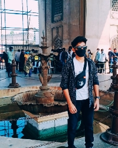

About The Founder

Founder - Sohail Mohammad
Sohail Mohammad is a student and he is currently pursuing
BTECH degree in CSE-Artificial Intelligence and Machine Learning
from MRCET, Hyderabad.

Mr.Sohail belongs to Hyderabad, India. Hyderabad is one of the Metropolitan cities in India. It is
a best historical city in India. Charminar, Golconda Fort, Old City, Tankbund,
etc.. these places makes Hyderabad more popular. Hyderabad was ruled
by Nizam Nawabs in ancient time.
Sohail Mohammad always keeps updated with emerging technologies.
He acquired a lot of skills in past few years. He will share all
his experiences in his youtube channel "Sohail Says". Sohail Strongly
believe in Satya Nadella's quote "You will stop doing great things in
life, if you stop learning new things"
Sohail's Skills
| S.No |
Skills |
| 1 |
Python Programming |
| 2 |
C programming |
| 3 |
Web Development |
| 4 |
DS And Algo |
| 5 |
Networking |
| 6 |
Basic Hacking |
| 7 |
Content Creation |
| 8 | Video Editing |
| 9 | Cinematography |
| 10 | Machine Learning |